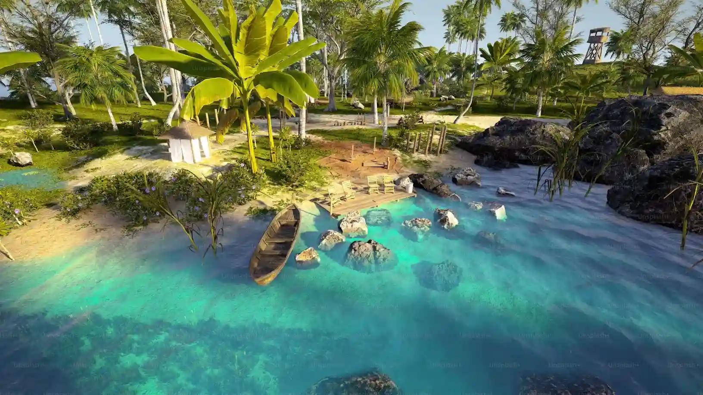

Data
- Area:
- 801,590 sq km
- Population:
- ≈ 33,000,000
- Capital:
- Maputo
- Languages:
- Portuguese; local languages
- Currency:
- MZN (Metical)
- Time Zone:
- UTC+2
- Calling Code:
- +258
- Internet TLD:
- .mz
- Temperature: 10 °C
- Conditions: Partly Cloudy
- Wind: 5 km/h
- Wind Chill: N/A
About Mozambique
Mozambique stretches along the Indian Ocean with white‑sand beaches, coral reefs, and islands like the Bazaruto Archipelago.
Gorongosa National Park highlights rich wildlife, and Maputo blends Portuguese influence with African culture and music.